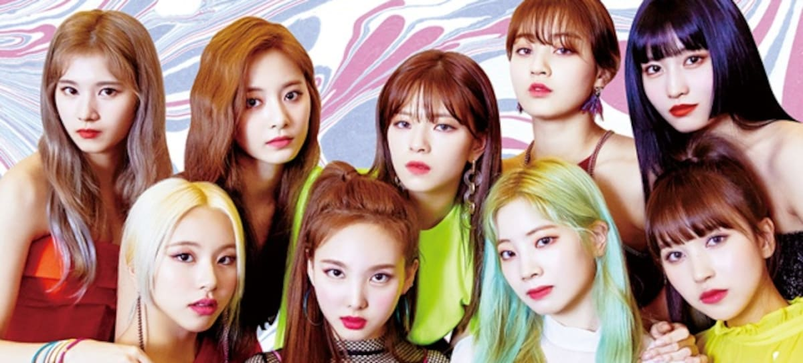

Fan Page

TWICE es un grupo femenino de K-pop formado por JYP Entertainment. Con canciones llenas de energía, diferentes conceptos y una gran conexión con sus fans, se ha convertido en uno de los grupos más reconocidos a nivel internacional.
Página dedicada al grupo femenino de K-pop TWICE por su amiga Ana.
Aquí encontrarás información, momentos destacados y contenido sobre nuestras integrantes favoritas.
Nayeon · Jeongyeon · Momo · Sana · Jihyo · Mina · Dahyun · Chaeyoung · Tzuyu